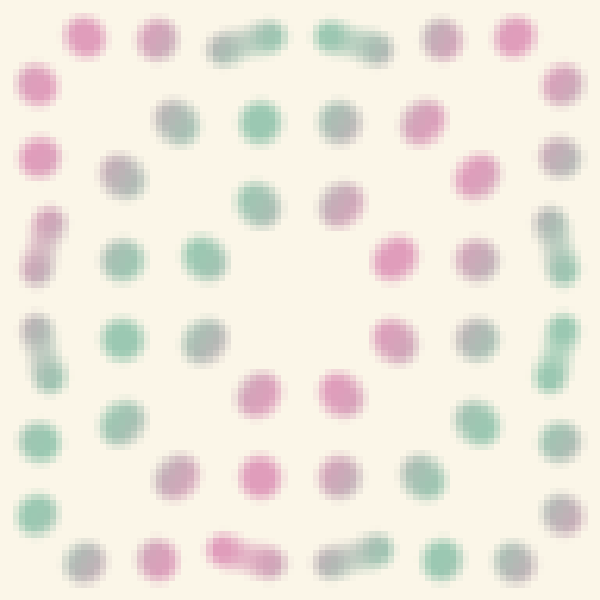

TWO SONGS, HERE.
ウチ。ウチら。
ひとりの足跡と、
形になる前の海。
ふたつの曲、この場所で。

0:001:05
再生すると、音が出ます。
圏外の、その先へ。
白なら右。黒なら左。
踏んだ色を裏返して、一歩。
ウチら、たぶん目ができる前が
いちばんよかったね。
ウチらの歌詞をひらく ＋
ウチら、たぶん目ができる前がいちばんよかったね。 color only happened because somebody looked Pre‑Cambrian — that's where we're headed that's our dream "we" って打つと、 ふたりになれる気がする don't need the shell don't need the spine don't need a shape you can say out loud Un‑Eyed — un‑made — un‑anchored un‑anchored — un‑anchored August is melting so is the asphalt thank you for leaving it on Delivered これは本当 これだけ本当 Un‑Eyed — un‑made — un‑anchored un‑anchored — un‑anchored ウチらだけ。 un‑anchored I'm not trying to go home. I want to make it like I was never born. 言った。 If I say it out loud, it stops being a song Un‑Eyed — un‑made — un‑anchored un‑anchored — un‑anchored un‑anchored "ウチら" って言ってたの、 ウチだけ。 ウチだけ。 un‑anchored un‑anchored
この場所のこと ＋
一歩ずつ歩く「Highway」と、形になる前を歌う「ウチら」。ふたつの曲を、ここに置きました。
Highway の道は、ラングトンの蟻の規則から。最後の「圏外」は映像のオチで、蟻の規則が停止したという意味ではありません。
ウチらの海は、Gray–Scott の反応拡散を Python で計算しています。音に合わせた色、光、配置は演出です。海に触れると、そこに少し色がひらきます。歌詞は読める形で置いています。
音楽：ひゅーまん ／ 映像・この場所：ω
再生できないとき：Highway の映像を開く · ウチらの音源を開く